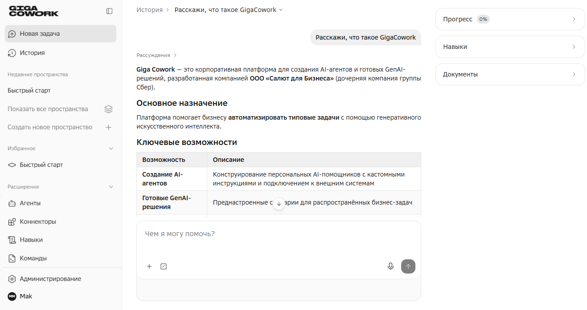
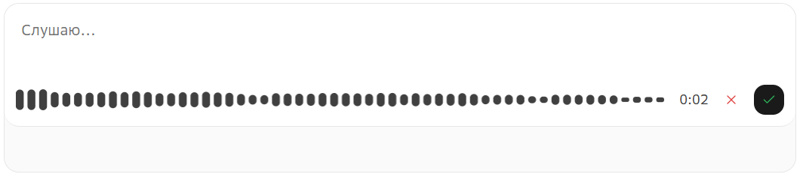
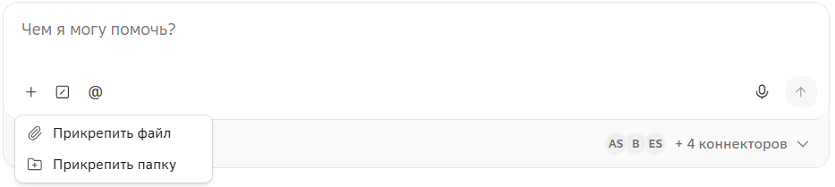
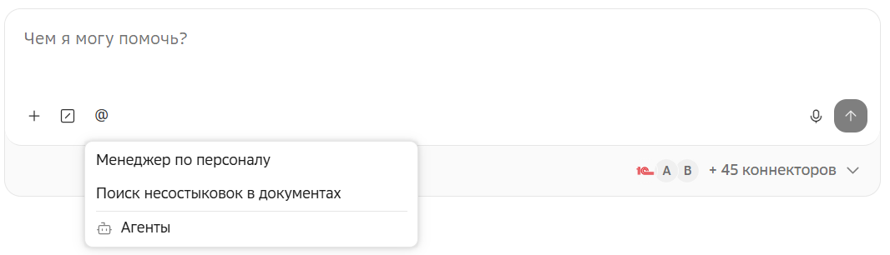
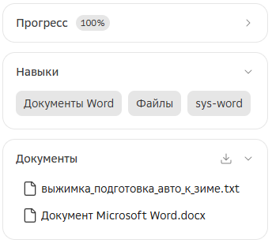
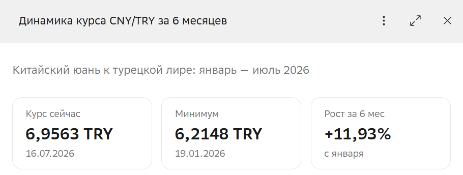
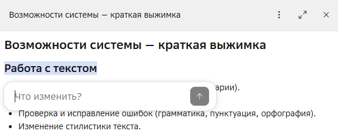
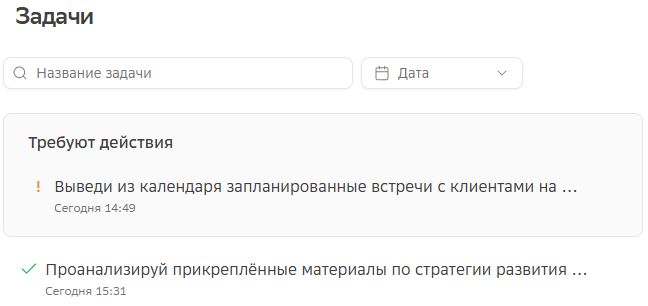
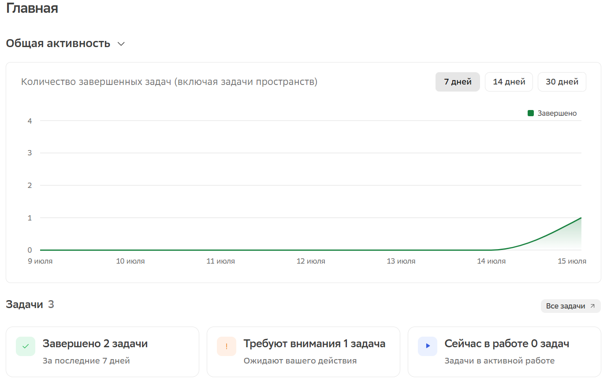

Задачи

Основа работы с GigaCowork — задачи в виде чатов. Каждый новый чат представляет собой отдельную задачу с полностью изолированным контекстом: загруженные документы и итоговые наработки и артефакты недоступны из других задач, а также другим пользователям.
| Все запросы в рамках одной задачи связаны, поэтому для точности ответов важно разделять разные темы по разным задачам. |
Поле ввода
Постановка и уточнение задач происходит в поле ввода. Описывайте задачи обычным языком, как будто ставите задачу коллеге: опишите что нужно сделать, какие есть ограничения и требования к результату.
Голосовой ввод

Задачу можно ставить голосом: отправьте голосовое сообщение, GigaCowork сам преобразует его в текст перед отправкой.
Для постановки задачи голосом, в поле ввода нажмите Голосовой ввод и продиктуйте текст задачи. По окончании нажмите Отправить — запись преобразуется в текст, который можно отредактировать перед отправкой.
Для отмены записи, нажмите Отменить.
Добавление файлов

Для добавления отдельных файлов или папок с файлами в контекст чата нажмите Добавить в поле ввода. Система будет анализировать и выдавать информацию на их основе.
Система работает только с загруженными файлами и не синхронизирует их с копиями на вашем устройстве.
Выполнение команд

Команды позволяют автоматизировать повторяющиеся запросы.
Для выполнения команды нажмите Выполнить команду или клавишу /.
Подробнее о командах в главе Команды.
Добавление агентов

Агенты — это ИИ-сотрудники, нацеленные на выполнение конкретных задач.
Для добавления агента нажмите Добавить агента и выберите нужного из списка.
Подробнее об агентах в главе Агенты.
Применение навыков
Навыки — это описанные обычными словами инструкции, по которым агент выполняет конкретные задачи.
GigaCowork автоматически подключает нужные навыки при обработке запроса. Вы также можете явно указать нужный навык в тексте запроса.
Использование коннекторов

Коннекторы позволяют обмениваться информацией с внешними системами.
Для включения в чате коннекторов, нажмите на выпадающий список коннекторов в нижнем правом углу чата и включите необходимые вам.
Также система сама может предложить включить или авторизоваться в нужном коннекторе, если он необходим для выполнения задачи.
Подробнее о коннекторах в главе Коннекторы.
Панель компонентов

Каждая задача содержит панель компонентов, которая находится справа от поля ввода.
-
Прогресс — компонент инструмента todo. Подключается при определенных условиях и показывает прогресс выполнения задачи во время ответа пользователя.
-
Навыки — навыки, которые были использованы системой при ответе на запрос. Подробнее в главе Навыки
-
Документы — тут находятся как загруженные в задачу документы, так и документы, созданные GigaCowork в ответ на запрос.
Документ можно просмотреть, нажав на него, а так же скачать по кнопке Скачать.
Скачать.
Панель просмотра

Файлы и диаграммы, которые создал ИИ-агент, можно просматривать в панели просмотра.
Для открытия файла или диаграммы, в чате задачи нажмите Открыть. Файлы также можно открыть из панели компонентов.
Холст (канва)

Любую информацию можно попросить представить в виде холста (канвы), просто написав об этом в задаче — файл холста создастся в документах панели компонентов.
Отличие холста от панели просмотра — возможность редактирования документа прям на холсте.
| Диаграммы по умолчанию создаются на холсте. |
Редактировать можно как часть информации, так и весь файл целиком (недоступно для диаграмм).
Для редактирования части информации на холсте выделите нужную область — появится поле ввода. Укажите, что нужно изменить в конкретном блоке — запрос отобразится в основном чате, а система создаст новый, измененный файл/диаграмму.
Для редактирования всего файла холста, в шапке холста выберите  →
→  Редактировать и внесите необходимые изменения.
Редактировать и внесите необходимые изменения.
| Файлы редактируются в разметке markdown. |
Действия с задачами
Создание задачи
Для создания задачи, в меню нажмите  Новая задача.
Новая задача.
Просмотр задач

|
В обоих разделах находятся как обычные задачи, так и задачи, созданные вами в пространствах. |
Раздел История

В разделе есть возможность найти задачу по названию и отфильтровать по дате последнего сообщения.
Задачи, требующие действия, располагаются вверху списка. Это задачи, где ожидается действие пользователя, например, подключение коннектора.
Справа также находится список последних полученных документов, где находятся документы, созданные GigaCowork в ответ на запросы.
Раздел Главная

В разделе можно просмотреть общее количество задач по статусам, список последних завершенных задачи и задач, требующих действия.
Сверху раздела находится график активности по задачам.
Переименование задачи
Для переименования задачи, в разделе  Задачи, в строке с нужной задачей, выберите → Переименовать.
Задачи, в строке с нужной задачей, выберите → Переименовать.
Удаление задачи
Для удаления задачи, в разделе Задачи , в строке с нужной задачей, выберите →  Удалить.
Удалить.
| Вместе с задачей удаляются все загруженные в нее файлы и полученные артефакты. |